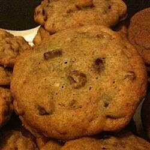

Cookies

Recipe description:
This is a recipe date cookies. They wont help get you a date
Ingredients:
- 1 cup butter, softened
- 1 ⅓ cups white sugar
- 3 eggs
- 3 cups sifted all-purpose flour
- 1 teaspoon baking soda
- ½ teaspoon ground cinnamon
- 2 teaspoons water
- 1 ½ cups chopped pitted dates
- 1 cup chopped pecans
- ¼ teaspoon ground cloves
Steps:
- Preheat the oven to 375 degrees F
- Combine ingredients into bowl and stir
- Place onto pan in mounds
- Bake for 8 to 10 minutes and enjoy!